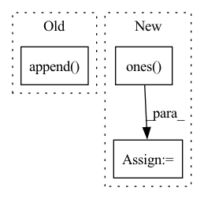

Pattern ID :19512
Before Change
score = metric(link_labels.cpu(), link_logits.cpu())
mae.append(mean_absolute_error(link_labels.cpu(), link_logits.cpu()))
rmse.append(mean_squared_error(link_labels.cpu(), link_logits.cpu(), squared=False))
mse.append( mean_squared_error(link_labels.cpu(), link_logits.cpu()))
return score, model, mae, rmse, mse
def test_all(self, train_data_local_dict, test_data_local_dict, device, args) -> bool:
logging.info("----------test_on_the_server--------")After Change
out = model.decode(z, batch.edge_index, neg_edge_index).view(-1).sigmoid()
pred = (out > threshold).float() * 1
cum_score += average_precision_score(np.ones( pred.numel()) , pred.cpu())
print(cum_score)
ngraphs += batch.num_graphs
In pattern: SUPERPATTERN
Frequency: 3
Non-data size: 3
Instances Fragment ID: 63528170
Project Name: fedml-ai/fedml
Commit Name: 0bed2c22b8b40421e77d045b17d8c3e54aff3d3f
Time: 2022-07-29
Author: emirceyani@gmail.com
File Name: python/app/fedgraphnn/ego_networks_link_pred/trainer/federated_lp_aggregator.py
M Class Name: FedLPAggregator
N Class Name: FedLPAggregator
M Method Name: _test(5)
N Method Name: _test(5)
M Parent Class: ServerAggregator
N Parent Class: ServerAggregator
M File Name: python/app/fedgraphnn/ego_networks_link_pred/trainer/federated_lp_aggregator.py
N File Name: python/app/fedgraphnn/ego_networks_link_pred/trainer/federated_lp_aggregator.py
M Start Line: 26
M End Line: 49
N Start Line: 27
N End Line: 52
Before Change
for name, input_size in self.input_sizes.items():
// select slice of embedding belonging to a single input
variable_embedding = embedding[..., start : (start + input_size)]
variable_embedding_mean.append( variable_embedding.abs().mean(-1))
var_outputs.append(self.single_variable_grns[name](variable_embedding))
start += input_size
var_outputs = torch.stack(var_outputs, axis=-1)
After Change
if outputs.ndim == 3: // -> batch size, time, hidden size, n_variables
sparse_weights = torch.ones(outputs.size(0), outputs.size(1), 1, 1, device=outputs.device) //
else: // ndim == 2 -> batch size, hidden size, n_variables
sparse_weights = torch.ones( outputs.size(0), 1, 1, device=outputs.device)
return outputs, sparse_weights
class PositionalEncoder(torch.nn.Module): Fragment ID: 63528172
Project Name: jdb78/pytorch-forecasting
Commit Name: 4b0e3005131eafedd8fe0d16081984f90c284a62
Time: 2020-08-12
Author: beitner.jan@bcg.com
File Name: pytorch_forecasting/models/temporal_fusion_transformer/sub_modules.py
M Class Name: VariableSelectionNetwork
N Class Name: VariableSelectionNetwork
M Method Name: forward(3)
N Method Name: forward(3)
M Parent Class: nn.Module
N Parent Class: nn.Module
M File Name: pytorch_forecasting/models/temporal_fusion_transformer/sub_modules.py
N File Name: pytorch_forecasting/models/temporal_fusion_transformer/sub_modules.py
M Start Line: 310
M End Line: 335
N Start Line: 351
N End Line: 382
Before Change
height = input_img.size(-1)
augmentated_data = []
if self.add_mask:
args.append( torch.ones_like(input_img[:1, :, :]).long())
for datum in args:
if isinstance(datum, torch.Tensor) and datum.size(-2) == width and datum.size(-1) == height:
augmentated_data.append(augmentation(datum))
else:After Change
else:
augmentated_data.append(datum)
if self.add_mask:
created_mask = torch.ones( [1, input.size(-2), input.size(-1)], device=self.device)
augmented_created_mask = augmentation(created_mask, is_mask=True)
augmentated_data.append(augmented_created_mask)
return augmentated_data
Fragment ID: 63528177
Project Name: anguelos/tormentor
Commit Name: 152a943b2533f1acff707b52ca0a23a464e933e0
Time: 2020-07-23
Author: anguelos.nicolaou@gmail.com
File Name: tormentor/augmented_dataset.py
M Class Name: AugmentedDs
N Class Name: AugmentedDs
M Method Name: augment_sample(1)
N Method Name: augment_sample(1)
M Parent Class: torch.utils.data.Dataset
N Parent Class: torch.utils.data.Dataset
M File Name: tormentor/augmented_dataset.py
N File Name: tormentor/augmented_dataset.py
M Start Line: 25
M End Line: 31
N Start Line: 27
N End Line: 37